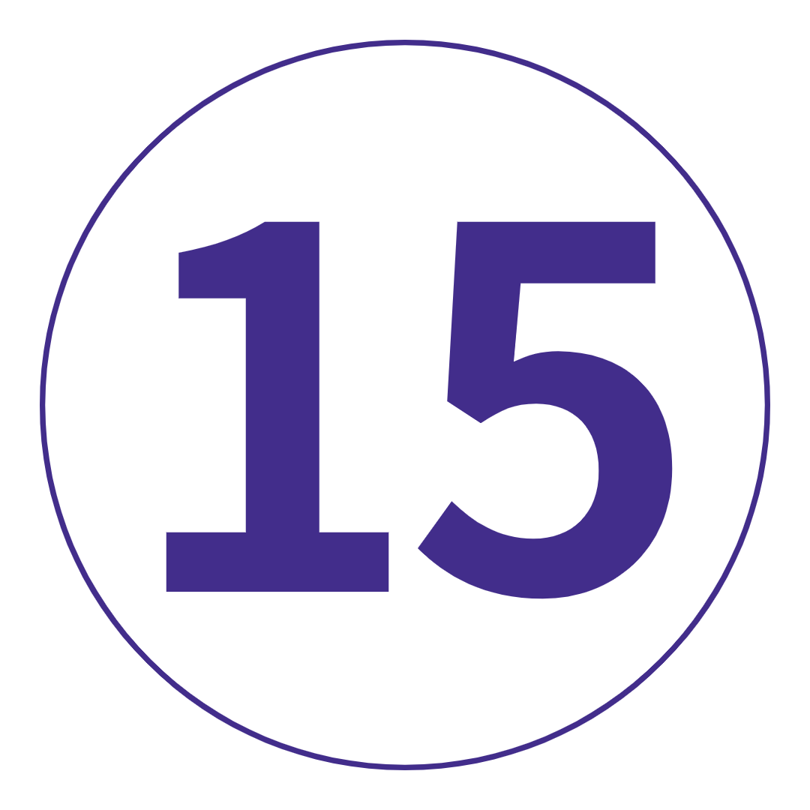

여행 개요
지 도
TRIP VIBE = 사교 활동, 버킷리스트 명소, 즐거운 시간이 가득한 빠른 속도로 진행되는 재미.
표준 유로 여행을 마치고 이제 더 많은 것을 원하십니까? 더 많은 파스타, 피에로기, 파프리카, 필스너? 여기에서 찾을 수 있습니다.
비엔나의 바로크 양식의 궁전부터 암스테르담의 자갈길까지, 부다페스트의 루인 바, 베를린의 비어홀, 그리고 덜 알려진 보석 브라티슬라바와 크라쿠프까지. 이것은 중부 및 동부 유럽: 하이라이트입니다. 모든 사람이 초대되었습니다. 해보자
여행 일정
-
 이탈리아 로마
평범한 것을 버리고 특별한 것을 발견할 준비가 되셨습니까? 벨라 로마에서 우리를 만난 다음 모든 도보 여행을 끝내기 위해 도보 여행을 준비하십시오. Birk를 신고 물병에 물을 채우고 마찰 방지 크림을 포장하십시오. 필요할 것입니다. 우리는 몇 시간 동안 논스톱 명소, 관광지를 벗어나 숨겨진 보석, 거의 3000년의 역사에 대해 이야기하고 있습니다. 판테온을 지나 트레비 분수에 2센트를 던지고 스페인 계단에 앉아 거대한 콜로세움의 그늘 아래에서 물건을 감아 보세요. Epic은 심지어 그것을 자르지 않습니다. 그런 다음 미식가를 위해 Disneyland에 있으므로 오늘 밤 포함 된 저녁 식사가 좋을 것입니다. 부온 에피타이토!
이탈리아 로마
평범한 것을 버리고 특별한 것을 발견할 준비가 되셨습니까? 벨라 로마에서 우리를 만난 다음 모든 도보 여행을 끝내기 위해 도보 여행을 준비하십시오. Birk를 신고 물병에 물을 채우고 마찰 방지 크림을 포장하십시오. 필요할 것입니다. 우리는 몇 시간 동안 논스톱 명소, 관광지를 벗어나 숨겨진 보석, 거의 3000년의 역사에 대해 이야기하고 있습니다. 판테온을 지나 트레비 분수에 2센트를 던지고 스페인 계단에 앉아 거대한 콜로세움의 그늘 아래에서 물건을 감아 보세요. Epic은 심지어 그것을 자르지 않습니다. 그런 다음 미식가를 위해 Disneyland에 있으므로 오늘 밤 포함 된 저녁 식사가 좋을 것입니다. 부온 에피타이토!
키워드 저녁 + 로마 도보여행 -
 로마-베니스거짓말이 아닙니다. 오늘은 장거리 운전을 해야 합니다. 그러나 AUX 코드를 넘겨주는 것보다 여행 동료를 더 잘 알 수있는 방법을 지정하십시오. 나중에 우리는 400개가 넘는 다리와 비발디의 발상지인 베니스에 주차합니다. 산마르코 광장, 도제의 궁전, 아카데미아 다리 등을 둘러보는 도보 여행을 통해 일반적인 용의자들에 대해 알아보세요. 오늘 밤: 이 아름답고 낭만적인 도시는 당신의 것입니다. 갱단을 모아 오스테리아 알 포르테고(Osteria Al Portego)에서 저렴한(ish) 식사를 즐긴 다음, 베니스(Venice)의 자홍색 일몰 중 하나가 내려다보이는 스프릿츠(또는 두 잔)를 즐기세요.
로마-베니스거짓말이 아닙니다. 오늘은 장거리 운전을 해야 합니다. 그러나 AUX 코드를 넘겨주는 것보다 여행 동료를 더 잘 알 수있는 방법을 지정하십시오. 나중에 우리는 400개가 넘는 다리와 비발디의 발상지인 베니스에 주차합니다. 산마르코 광장, 도제의 궁전, 아카데미아 다리 등을 둘러보는 도보 여행을 통해 일반적인 용의자들에 대해 알아보세요. 오늘 밤: 이 아름답고 낭만적인 도시는 당신의 것입니다. 갱단을 모아 오스테리아 알 포르테고(Osteria Al Portego)에서 저렴한(ish) 식사를 즐긴 다음, 베니스(Venice)의 자홍색 일몰 중 하나가 내려다보이는 스프릿츠(또는 두 잔)를 즐기세요.
키워드 아침 + 베니스 도보여행
추가 옵션 맞춤 여행 티셔츠 또는 후드티를 받으세요: 최저 €21 -
 베니스 수백 년 된 건축물. 독창적인 요리. 그리고 양동이의 문화. 베니스는 탐험을 구걸하고 있습니다. 대운하를 따라 선택 사항인 곤돌라를 타고 뻔한 일을 하십시오. 서사시 Libreria Acqua Alta 서점을 찾는 데 시간을 보내십시오. Giudecca 섬으로 여행을 떠나 관광 코스를 떠나십시오. 또는 위의 모든 것을 잊고 하루 동안 젤라타리아 크롤링을 시작하십시오. 방황하십시오. 운하와 광장의 미로에서 길을 잃으십시오. 그것이 추억을 만드는 것입니다.
베니스 수백 년 된 건축물. 독창적인 요리. 그리고 양동이의 문화. 베니스는 탐험을 구걸하고 있습니다. 대운하를 따라 선택 사항인 곤돌라를 타고 뻔한 일을 하십시오. 서사시 Libreria Acqua Alta 서점을 찾는 데 시간을 보내십시오. Giudecca 섬으로 여행을 떠나 관광 코스를 떠나십시오. 또는 위의 모든 것을 잊고 하루 동안 젤라타리아 크롤링을 시작하십시오. 방황하십시오. 운하와 광장의 미로에서 길을 잃으십시오. 그것이 추억을 만드는 것입니다.
추가 옵션 곤돌라 타기: €20부터 -
 베니스에서 오스트리아 비엔나로 가난한 이탈리아어로 마지막 커피 한 잔을 주문하십시오. 오늘 아침에 우리는 알프스를 지나 오스트리아로 향할 것입니다. 비엔나가 무엇으로 유명한지 짐작할 수 있다면 10점. 음악가. 그랜드 커피 하우스. 그리고 슈트루델(응!). 오페라 하우스(Opera House), 호프부르크 궁전(Hofburg Palace), 박물관 지구(Museum Quarter), 링슈트라세(Ringstrasse) 등을 운전하기 전에 호화로운 쇤부른 궁전(시시 공주의 고향)에 잠시 들러보세요. 나머지 오후는 100% 당신에게 달려 있습니다. 저녁 식사를 위해 Naschmarkt로 가서 knödel(오스트리아 만두)을 먹거나 명백한 선택인 슈니첼을 선택하십시오. 나중에: 가족을 모아 도시의 소규모 양조장이나 멋진 칵테일 바를 위해 일렬로 세우십시오.
베니스에서 오스트리아 비엔나로 가난한 이탈리아어로 마지막 커피 한 잔을 주문하십시오. 오늘 아침에 우리는 알프스를 지나 오스트리아로 향할 것입니다. 비엔나가 무엇으로 유명한지 짐작할 수 있다면 10점. 음악가. 그랜드 커피 하우스. 그리고 슈트루델(응!). 오페라 하우스(Opera House), 호프부르크 궁전(Hofburg Palace), 박물관 지구(Museum Quarter), 링슈트라세(Ringstrasse) 등을 운전하기 전에 호화로운 쇤부른 궁전(시시 공주의 고향)에 잠시 들러보세요. 나머지 오후는 100% 당신에게 달려 있습니다. 저녁 식사를 위해 Naschmarkt로 가서 knödel(오스트리아 만두)을 먹거나 명백한 선택인 슈니첼을 선택하십시오. 나중에: 가족을 모아 도시의 소규모 양조장이나 멋진 칵테일 바를 위해 일렬로 세우십시오.
키워드 아침 + 비엔나 드라이브 -
 비엔나
비엔나에서의 하루 종일 – 마음을 진정으로 훔칠 준비를 하십시오. 박물관 지구로 가서 탐험하세요. 미학에 관한 모든 것? MUMOK의 현대미술은 필수입니다. 예쁜 호프부르크 궁전을 거닐어 보세요. 지금까지 마셔본 애프터눈 티 중 가장 많은 부지 애프터눈 티를 즐기려면 Cafe Central에서 테이블을 잡으세요(대기열을 준비하세요). 또는 Neubau에서 비엔나의 힙스터 허브를 경험해 보세요. 오늘 밤, 선택적 콘서트에서 비엔나 체임버 오케스트라가 연주하는 모차르트와 바흐의 감미로운 소리를 즐겨보세요. 클래식 음악이 평소에 즐겨 듣는 음악이 아니더라도 이것은 특별한 것입니다.
비엔나
비엔나에서의 하루 종일 – 마음을 진정으로 훔칠 준비를 하십시오. 박물관 지구로 가서 탐험하세요. 미학에 관한 모든 것? MUMOK의 현대미술은 필수입니다. 예쁜 호프부르크 궁전을 거닐어 보세요. 지금까지 마셔본 애프터눈 티 중 가장 많은 부지 애프터눈 티를 즐기려면 Cafe Central에서 테이블을 잡으세요(대기열을 준비하세요). 또는 Neubau에서 비엔나의 힙스터 허브를 경험해 보세요. 오늘 밤, 선택적 콘서트에서 비엔나 체임버 오케스트라가 연주하는 모차르트와 바흐의 감미로운 소리를 즐겨보세요. 클래식 음악이 평소에 즐겨 듣는 음악이 아니더라도 이것은 특별한 것입니다.
추가 옵션 사운드 오브 비엔나 오케스트라 티켓: €40부터 / 사운드 오브 비엔나 오케스트라 티켓(저녁 포함): €62부터 -
 비엔나에서 헝가리 부다페스트로, 슬로바키아 브라티슬라바 경유우리의 비엔나 연애는 짧았지만 너무 달콤했습니다. 다음으로? 부다와 페스트의 쌍둥이 도시. 하지만 먼저 슬로바키아의 매혹적인 수도를 빠르게 둘러보세요. 하루에 3개국? 우리와 함께만. City of Bridges에서는 운전기사가 운전하여 Chain Bridge, Castle District, Gellert Hotel, Heroes' Square 및 House of Terror를 지나게 됩니다. SD 카드가 가득 차고 배는 투덜거립니다. 이제 현지 음식을 맛볼 시간입니다. 굴라시. 치킨 파프리카. 랑고스. 도보스 케이크. 당신이 파프리카를 좋아하기를 바랍니다. 그들은 여기 파프리카에 집착하고 있습니다. 나중에는 힙스터들과 어울리고 원래의 루인 바 중 한 곳에서 현지 팔린카(과일 브랜디)를 마셔보세요.
비엔나에서 헝가리 부다페스트로, 슬로바키아 브라티슬라바 경유우리의 비엔나 연애는 짧았지만 너무 달콤했습니다. 다음으로? 부다와 페스트의 쌍둥이 도시. 하지만 먼저 슬로바키아의 매혹적인 수도를 빠르게 둘러보세요. 하루에 3개국? 우리와 함께만. City of Bridges에서는 운전기사가 운전하여 Chain Bridge, Castle District, Gellert Hotel, Heroes' Square 및 House of Terror를 지나게 됩니다. SD 카드가 가득 차고 배는 투덜거립니다. 이제 현지 음식을 맛볼 시간입니다. 굴라시. 치킨 파프리카. 랑고스. 도보스 케이크. 당신이 파프리카를 좋아하기를 바랍니다. 그들은 여기 파프리카에 집착하고 있습니다. 나중에는 힙스터들과 어울리고 원래의 루인 바 중 한 곳에서 현지 팔린카(과일 브랜디)를 마셔보세요.
키워드 아침 + 브라티슬라바 오리엔테이션 + 부다페스트 드라이브 -
 부다페스트
당신은 탐험의 자유를 원했습니다 – 여기 있습니다. 중앙시장회관에서 확인하세요. 유대인 지구를 탐험하세요. Flippermúzeum에서 핀볼을 플레이하세요. House of Terror에서 끔찍한 교육을 받으십시오. 익명의 동상을 사냥하십시오. Széchenyi Thermal Baths의 치료용 물에 몸을 담그십시오. 부다 성으로 가서 어부의 요새에서 모든 전망을 확인하십시오. 그리고 오늘 밤? 세련된 분위기와 UN 현실의 전망을 위해 도시의 옥상 바 몇 곳을 둘러보세요.
부다페스트
당신은 탐험의 자유를 원했습니다 – 여기 있습니다. 중앙시장회관에서 확인하세요. 유대인 지구를 탐험하세요. Flippermúzeum에서 핀볼을 플레이하세요. House of Terror에서 끔찍한 교육을 받으십시오. 익명의 동상을 사냥하십시오. Széchenyi Thermal Baths의 치료용 물에 몸을 담그십시오. 부다 성으로 가서 어부의 요새에서 모든 전망을 확인하십시오. 그리고 오늘 밤? 세련된 분위기와 UN 현실의 전망을 위해 도시의 옥상 바 몇 곳을 둘러보세요. -
 부다페스트에서 폴란드 크라쿠프까지전설에 따르면 크라쿠프를 건설하려면 용을 쓰러뜨려야 했습니다(왕좌의 게임, 마음을 먹어라). 거주하는 용에 대한 소개와 함께 도보 여행을 통해 이 보석 같은 도시에 대해 알아보세요. 그 다음에? Fleetwood의 조언을 받아들이고 자신의 길을 가십시오. 바벨 성(Wawel Castle)에서 역사 지식을 채우고, 유대인 지구(Jewish Quarter)의 트렌디한 카페와 부티크를 둘러보고, 쉰들러 박물관(Schindler's Museum)으로 향하거나, 지역 명소를 찾아 쌓인 피에로기(Pierogi) 접시에 몸을 담그십시오.
부다페스트에서 폴란드 크라쿠프까지전설에 따르면 크라쿠프를 건설하려면 용을 쓰러뜨려야 했습니다(왕좌의 게임, 마음을 먹어라). 거주하는 용에 대한 소개와 함께 도보 여행을 통해 이 보석 같은 도시에 대해 알아보세요. 그 다음에? Fleetwood의 조언을 받아들이고 자신의 길을 가십시오. 바벨 성(Wawel Castle)에서 역사 지식을 채우고, 유대인 지구(Jewish Quarter)의 트렌디한 카페와 부티크를 둘러보고, 쉰들러 박물관(Schindler's Museum)으로 향하거나, 지역 명소를 찾아 쌓인 피에로기(Pierogi) 접시에 몸을 담그십시오.
키워드 아침밥 + 크라쿠프 도보여행 -
 폴란드 크라쿠프여기 우리가 미리 준비한 무료 날입니다. 몇 가지 제안이 필요하십니까? 유대인 지구의 중심부에 있는 함사로 가서 '후무스와 행복'을, 유네스코에 등재된 클로스 홀에서 '발트해의 황금'을 쇼핑하세요. 아니면 현지인처럼 오크라글락(Okraglak)으로 가서 군침이 도는 길거리 음식을 즐겨보세요. 자피에칸키는 필수 코스입니다! 그런 다음 선택 사항인 시음 투어에서 보드카 팔레트를 다듬을 시간입니다. 폴란드 보드카의 비하인드 스토리를 배우고 이동하면서 독특한 풍미를 지닌 몇 가지 품종을 맛보십시오. 레드불 없이 마시기를 거부하십니까? 대신 현지 맥주를 시음할 수 있는 바가 많이 있습니다.
폴란드 크라쿠프여기 우리가 미리 준비한 무료 날입니다. 몇 가지 제안이 필요하십니까? 유대인 지구의 중심부에 있는 함사로 가서 '후무스와 행복'을, 유네스코에 등재된 클로스 홀에서 '발트해의 황금'을 쇼핑하세요. 아니면 현지인처럼 오크라글락(Okraglak)으로 가서 군침이 도는 길거리 음식을 즐겨보세요. 자피에칸키는 필수 코스입니다! 그런 다음 선택 사항인 시음 투어에서 보드카 팔레트를 다듬을 시간입니다. 폴란드 보드카의 비하인드 스토리를 배우고 이동하면서 독특한 풍미를 지닌 몇 가지 품종을 맛보십시오. 레드불 없이 마시기를 거부하십니까? 대신 현지 맥주를 시음할 수 있는 바가 많이 있습니다.
추가 옵션 보드카 시음: 149 PLN부터 -
 크라쿠프에서 체코 프라하까지
첨탑이 가득한 스카이라인과 신비로운 프라하의 거리를 향해! 우리의 여행 리더는 기발한 시계탑이 있는 이 그림 같은 완벽한 도시에 대해 알려줄 것이며 내일 자유 시간에 꼭 해야 할 모든 일을 알려줄 것입니다. 저녁 식사로 smažený sýr(꿈의 튀긴 치즈)를 즐긴 후에는 마을로 가서 체코 현지 맥주를 맛보거나 1950년대 분위기의 구식 장소인 The Alchemist에서 칵테일을 맛보십시오. 힌트: 완전한 경험을 원한다면 '운명을 선택하세요'를 요청하십시오. 아침에 뵙겠습니다.
크라쿠프에서 체코 프라하까지
첨탑이 가득한 스카이라인과 신비로운 프라하의 거리를 향해! 우리의 여행 리더는 기발한 시계탑이 있는 이 그림 같은 완벽한 도시에 대해 알려줄 것이며 내일 자유 시간에 꼭 해야 할 모든 일을 알려줄 것입니다. 저녁 식사로 smažený sýr(꿈의 튀긴 치즈)를 즐긴 후에는 마을로 가서 체코 현지 맥주를 맛보거나 1950년대 분위기의 구식 장소인 The Alchemist에서 칵테일을 맛보십시오. 힌트: 완전한 경험을 원한다면 '운명을 선택하세요'를 요청하십시오. 아침에 뵙겠습니다.
키워드 아침 + 프라하 도보여행 -
 프라하또 다른 날, 완전히 당신의 방식대로. 우리를 믿으십시오. 체코어가 많이 있습니다 (하!). 존 레논 벽을 찾으십시오. 공산주의 박물관에서 역사에 흠뻑 빠져보세요. 모든 전망을 보려면 케이블카를 타고 페트린 힐(Petrin Hill)을 올라갑니다. Dancing House가 무엇인지 확인하십시오. 아니면 구시가 광장에 줄지어 늘어선 노점상 중 한 곳에서 맛있는 구운 돼지고기 롤을 드셔보세요. 약간의 맥주 감정가로서 자신을 공상합니까? 오늘 오후에 선택 가능한 맥주 시음회를 놓치지 마세요. 11가지 체코 맥주 + 타파스 = 즐거운 시간.
프라하또 다른 날, 완전히 당신의 방식대로. 우리를 믿으십시오. 체코어가 많이 있습니다 (하!). 존 레논 벽을 찾으십시오. 공산주의 박물관에서 역사에 흠뻑 빠져보세요. 모든 전망을 보려면 케이블카를 타고 페트린 힐(Petrin Hill)을 올라갑니다. Dancing House가 무엇인지 확인하십시오. 아니면 구시가 광장에 줄지어 늘어선 노점상 중 한 곳에서 맛있는 구운 돼지고기 롤을 드셔보세요. 약간의 맥주 감정가로서 자신을 공상합니까? 오늘 오후에 선택 가능한 맥주 시음회를 놓치지 마세요. 11가지 체코 맥주 + 타파스 = 즐거운 시간.
추가 옵션 프라하 현지 맥주 시음: 800 CZK부터 -
 프라하에서 드레스덴을 경유하여 독일 베를린으로하나의 맥주 수도에서 다음 맥주로. 베를린으로 향하는 길을 만들기 전에 800년 된 드레스덴에 대해 알아보세요. 다른 어느 곳보다 1인당 커리부어스트와 더 많은 힙스터를 준비하세요. 베를린 장벽, 홀로코스트 기념관, 박물관 섬 및 알렉산더 광장을 포함한 주요 명소를 둘러보기 위해 운전해 드립니다. 오늘 밤: 그룹을 모아 이 도시의 밤문화가 정말 과대 광고에 부합하는지 확인하십시오.
프라하에서 드레스덴을 경유하여 독일 베를린으로하나의 맥주 수도에서 다음 맥주로. 베를린으로 향하는 길을 만들기 전에 800년 된 드레스덴에 대해 알아보세요. 다른 어느 곳보다 1인당 커리부어스트와 더 많은 힙스터를 준비하세요. 베를린 장벽, 홀로코스트 기념관, 박물관 섬 및 알렉산더 광장을 포함한 주요 명소를 둘러보기 위해 운전해 드립니다. 오늘 밤: 그룹을 모아 이 도시의 밤문화가 정말 과대 광고에 부합하는지 확인하십시오.
키워드 아침 + 드레스덴 오리엔테이션 + 베를린 하이라이트 -
 베를린문화, 역사, 맛있는 음식으로 폭발하는 도시 - 24시간 동안 최대한 활용해야 합니다. 우리의 조언? 실제로 흥미로운 역사적인 도보 여행을 선택하십시오. 나치 통치하의 도시가 어땠는지 현지 통찰력을 얻고 Reichstag, Checkpoint Charlie 및 Brandenburg Gate와 같은 것을 확인할 수 있습니다. 또한 남은 여가 시간을 보내는 방법에 대한 모든 내부 정보를 제공합니다. 또는 현지에서 진행하는 음식 투어에서 탄력 있는 허리띠를 궁극의 테스트에 적용해 보세요. 우리는 케밥, 패스트리, 더 많은 카레부어스트, 피에로기와 현지 필스너 맥주에 대해 이야기하고 있습니다. 오늘 저녁은 Burgermeister에서 저녁을 먹습니다. 이 장소는 공중 화장실 (ew) 이었지만 지금은 베를린 최고의 햄버거를 제공합니다 (yum). 또는 Mustafa의 케밥이 기대치를 충족하는지 확인하십시오.
베를린문화, 역사, 맛있는 음식으로 폭발하는 도시 - 24시간 동안 최대한 활용해야 합니다. 우리의 조언? 실제로 흥미로운 역사적인 도보 여행을 선택하십시오. 나치 통치하의 도시가 어땠는지 현지 통찰력을 얻고 Reichstag, Checkpoint Charlie 및 Brandenburg Gate와 같은 것을 확인할 수 있습니다. 또한 남은 여가 시간을 보내는 방법에 대한 모든 내부 정보를 제공합니다. 또는 현지에서 진행하는 음식 투어에서 탄력 있는 허리띠를 궁극의 테스트에 적용해 보세요. 우리는 케밥, 패스트리, 더 많은 카레부어스트, 피에로기와 현지 필스너 맥주에 대해 이야기하고 있습니다. 오늘 저녁은 Burgermeister에서 저녁을 먹습니다. 이 장소는 공중 화장실 (ew) 이었지만 지금은 베를린 최고의 햄버거를 제공합니다 (yum). 또는 Mustafa의 케밥이 기대치를 충족하는지 확인하십시오.
추가 옵션 제3제국 도보 투어: €12부터 / 베를린 음식 투어: €35부터 -
 베를린-암스테르담 네덜란드자, 아무도 당황하지 마십시오. 모험이 끝나가고 있습니다. 하지만 아직 끝나지 않았습니다! GPS는 오늘 암스테르담으로 설정되어 있습니다. 도착하면 조약돌을 밟고 담 광장(Dam Square), 왕궁(Royal Palace), 국립 기념물(National Monument)을 둘러보세요. 이 곳은 미식가의 천국이므로 저녁 식사를 위해 정착할 곳을 찾는 데 문제가 없습니다. 유혹에 넘어가 마요네즈를 곁들인 핫칩 콘을 잡으세요. 음. 나중에 운하 옆 와인 바 또는 양조장으로 가서 즐거운 시간을 보내십시오.
베를린-암스테르담 네덜란드자, 아무도 당황하지 마십시오. 모험이 끝나가고 있습니다. 하지만 아직 끝나지 않았습니다! GPS는 오늘 암스테르담으로 설정되어 있습니다. 도착하면 조약돌을 밟고 담 광장(Dam Square), 왕궁(Royal Palace), 국립 기념물(National Monument)을 둘러보세요. 이 곳은 미식가의 천국이므로 저녁 식사를 위해 정착할 곳을 찾는 데 문제가 없습니다. 유혹에 넘어가 마요네즈를 곁들인 핫칩 콘을 잡으세요. 음. 나중에 운하 옆 와인 바 또는 양조장으로 가서 즐거운 시간을 보내십시오.
키워드 아침밥 -
 암스테르담함께한 마지막 하루입니다. 그러니 서두르지 말고 자전거를 타십시오! 옵션으로 제공되는 자전거 투어를 통해 암스테르담의 상징적인 운하, 다리, 공원을 둘러보세요. 역사 애호가라면 안네 프랑크의 집을 방문해야 합니다(사전 예약을 잊지 마세요!). 그리고 반 고흐 미술관과 국립 미술관은 문화 애호가들을 위한 것입니다. 또는 좀 더 시원한 분위기를 원하신다면 Hannekes Boom으로 향하여 해안가의 전망, 맛있는 음식, 모든 면에서 좋은 시간을 보내십시오. 무슨 일이 일어나든 제 시간에 돌아와서 오늘 밤의 그룹 만찬에서 유럽 여행의 마지막 밤을 건배하세요.
암스테르담함께한 마지막 하루입니다. 그러니 서두르지 말고 자전거를 타십시오! 옵션으로 제공되는 자전거 투어를 통해 암스테르담의 상징적인 운하, 다리, 공원을 둘러보세요. 역사 애호가라면 안네 프랑크의 집을 방문해야 합니다(사전 예약을 잊지 마세요!). 그리고 반 고흐 미술관과 국립 미술관은 문화 애호가들을 위한 것입니다. 또는 좀 더 시원한 분위기를 원하신다면 Hannekes Boom으로 향하여 해안가의 전망, 맛있는 음식, 모든 면에서 좋은 시간을 보내십시오. 무슨 일이 일어나든 제 시간에 돌아와서 오늘 밤의 그룹 만찬에서 유럽 여행의 마지막 밤을 건배하세요.
키워드 저녁
추가 옵션 암스테르담 자전거 투어: €14부터 -
 암스테르담에서 영국 런던으로진지하게? 끝났어? 아침 식사 후, 우리는 LDN으로 트랙을 만들 것입니다. 마지막으로 Trip Song을 부르세요 - 내년 동창회 여행은 누가 가나요?
암스테르담에서 영국 런던으로진지하게? 끝났어? 아침 식사 후, 우리는 LDN으로 트랙을 만들 것입니다. 마지막으로 Trip Song을 부르세요 - 내년 동창회 여행은 누가 가나요?
키워드 아침
포함된 항목
|
포함된 경험 |
숙소 |
교통 |
|
트립 리더와 함께하는 로마 도보 여행 |
호스텔에서 12박, 유럽 캠핑장에서 방갈로에서 3박 |
에어컨 코치 |
|
선택 활동 |
| - 맞춤형 여행용 티셔츠 또는 후드티 받기: 최저 €21 - 베니스에서 곤돌라 타기: €20부터 - 사운드 오브 비엔나 오케스트라 티켓: €40부터 - 사운드 오브 비엔나 오케스트라 티켓(저녁 포함): €62부터 - 크라쿠프에서 보드카 시음: 149 PLN부터 - 프라하 현지 맥주 시음: 800 CZK부터 - 제3제국 도보 여행: €12부터 - 베를린 음식 투어: €35부터 - 암스테르담 자전거 투어: €14부터 |
16 일
8 국가
1 인당
US $ 2,469.00 부터

여행 코드: TCERL2
여행 노트 다운로드|
여행개요 |
|
|  밤 |  식사 식사 |
 최대 인원 최대 인원 |
|
| 시 작 | 14 : 00 로마 |
| 종 료 | 21 : 00 런던 |
-
날짜 및 가격 확인
2022년 4월 4월 24일 일 ~ 5월 9일 월 센트럴&이스턴 유럽 하이라이트 2022 US$2,629.00 2022년 5월 5월 22일 일 ~ 6월 6일 월 센트럴&이스턴 유럽 하이라이트 2022 US$2,699.00 2022년 6월 6월 19일 일 ~ 7월 4일 월 센트럴&이스턴 유럽 하이라이트 2022 US$2,699.00 2022년 7월 7월 10일 일 ~ 7월 25일 월 센트럴&이스턴 유럽 하이라이트 2022 US$2,949.00 7월 24일 일 ~ 8월 8일 월 센트럴&이스턴 유럽 하이라이트 2022 US$2,949.00 2022년 8월 8월 7일 일 ~ 8월 22일 월 센트럴&이스턴 유럽 하이라이트 2022 US$2,949.00 8월 21일 일 ~ 9월 5일 월 센트럴&이스턴 유럽 하이라이트 2022 US$2,949.00 2022년 9월 9월 4일 일 ~ 9월 19일 월 센트럴&이스턴 유럽 하이라이트 2022 US$2,509.00 9월 25일 일 ~ 10월 10일 월 센트럴&이스턴 유럽 하이라이트 2022 US$2,509.00 9월 21일 수 ~ 10월 14일 금 2022년 10월 10월 16일 수 ~ 10월 31일 금 센트럴&이스턴 유럽 하이라이트 2022 US$2,469.00